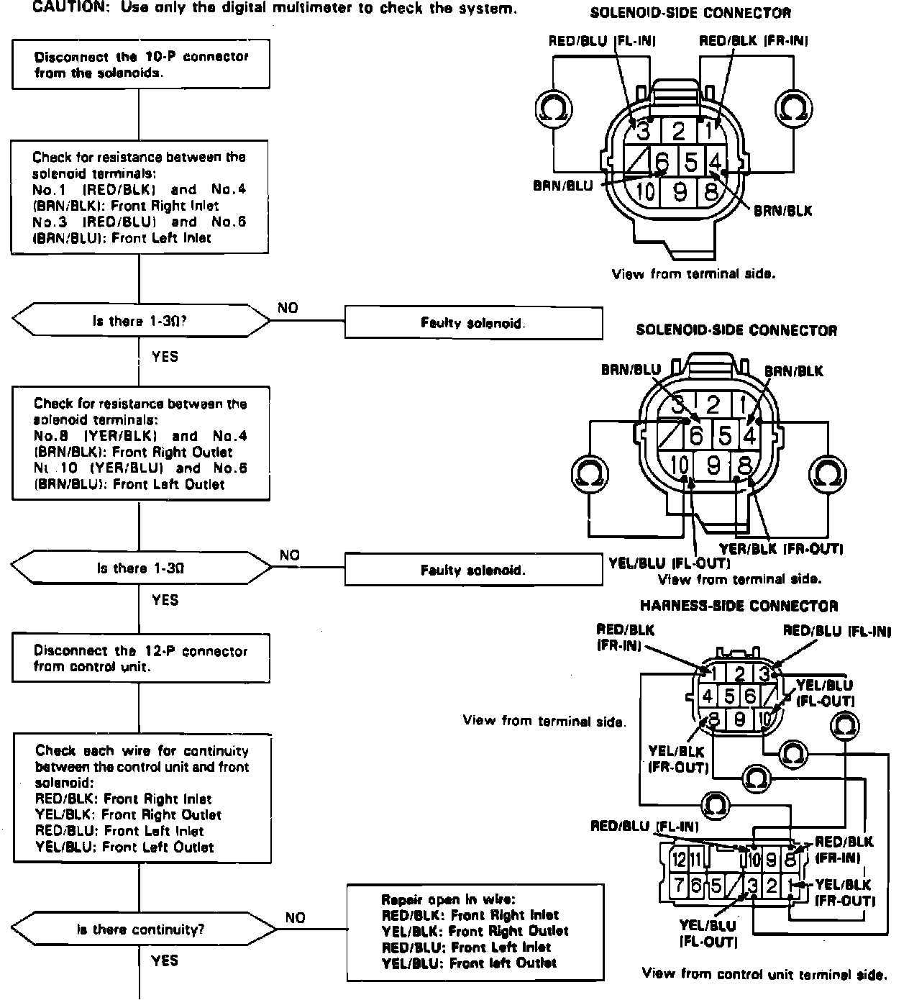
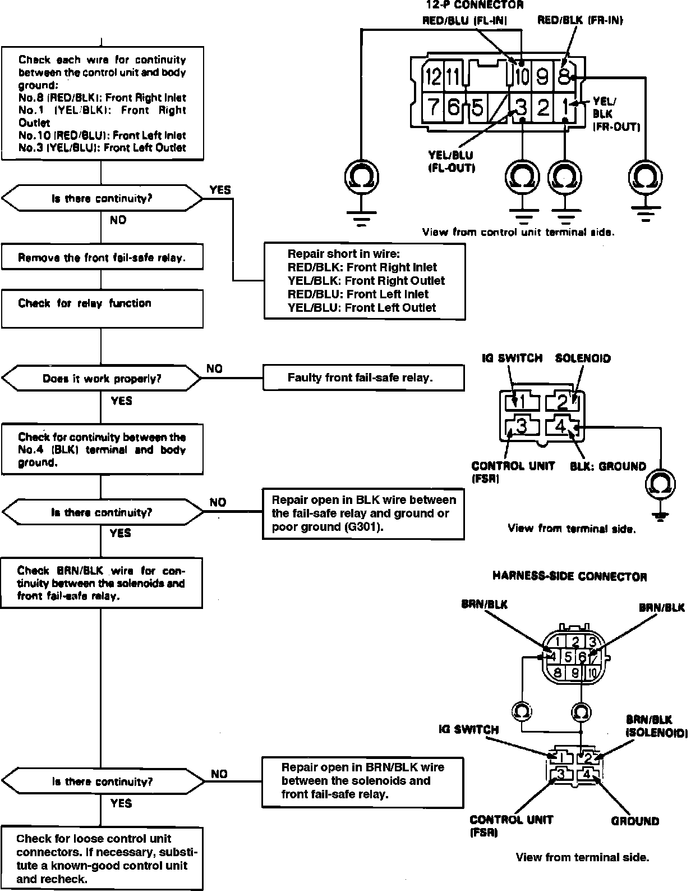

DTC 7-1
Fig. 41 Trouble Code 7-1 & 7-2, Front Solenoid Related Problem (Part 1 Of 2):

Fig. 41 Trouble Code 7-1 & 7-2, Front Solenoid Related Problem (Part 2 Of 2):

Refer to Fig. 41 for system diagnostic charts.

